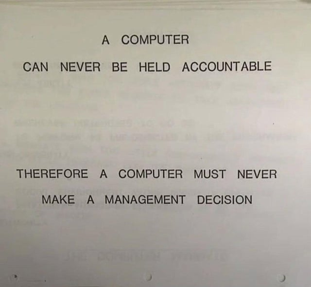

Policies
1. No Vibe Coding
Vibe coding is a way of programming where you rely heavily on AI tools or LLMs to generate code based on what you describe, instead of writing and understanding most of the code yourself. You might give the AI a problem or an idea, let it generate the implementation, and then mainly focus on whether the result works.
We are against vibe coding because it goes against the way we want to learn and practice programming in this community. Since Nira is mainly built around self-learning and understanding low-level programming, we want people here to actually understand what they are learning and what is happening under the hood. We don't want programming to become just giving a prompt to an AI and accepting whatever code comes out of it.
One of the main problems we see with vibe coding is that it can kill the learning process itself. Instead of going through the process of reading, experimenting, getting things wrong, debugging, understanding why something works, and slowly building the knowledge yourself, you can jump straight to getting an output. It gives you the result almost instantly, without having to go through the process that actually teaches you something.
For us, that process is important. Programming is not only about getting the final output or making something work. A big part of learning programming is the process of trying things, failing, figuring out why they failed, and understanding what is actually happening. We don't want to eliminate that process just because there is now a tool that can give us an answer immediately.
There are already tons of AI/ML communities out there where people discuss AI-assisted programming, vibe coding, and similar topics, so we decided not to make those things the main focus of our community. This doesn't mean we hate AI or don't use it. AI is affecting pretty much every part of the industry, and we use AI too. However, the way we use it is a little different from what is usually meant by "vibe coding."
For example, we use AI as a tool for learning, debugging, understanding concepts, doing part of our research, quickly looking up information, or rephrasing something to make it clearer. But we still put our own effort into understanding what is happening and writing things ourselves. We don't just take raw AI-generated code and consider the job done.
From our perspective, vibe coding can add another layer of abstraction on top of the computer systems we are trying to understand. That's why we still value learning the fundamentals and doing things by hand. If we can give our two cents, we would say using AI as a springboard is fine, and generating boilerplate code is fine too. But you should still have a complete understanding of what the AI has accessed, what it has generated, and what it has actually built. The important part is not whether AI was used, but whether you actually understand the result.
We see AI and LLMs as tools to help us learn and work, not something we should depend on entirely. That's just the philosophy behind this policy.

2. Autodidacticism
Autodidacticism, or simply self-learning, is the process of learning something by yourself. It means taking your own initiative to find information, study resources, experiment, and build an understanding instead of always waiting for someone else to teach you. It doesn't mean learning completely alone. You can still ask questions, discuss things, and learn from other people, but you are still responsible for your own learning.
This is one of the main ideas behind our community. Nira is mainly targeted towards people who are willing to learn by themselves and put some effort into finding the answers they need. We want everyone here to develop the habit of figuring things out, rather than always expecting someone else to provide the answer.
Because of that, we hope you do some basic research before asking a question. Try searching, reading documentation, looking through resources, or experimenting yourself. If you still cannot find the answer, then ask. There is no problem with that.
Sometimes you may not know where to start, or the problem may be genuinely difficult. That's completely fine. Just explain what you are trying to do, what you already tried, and where you got stuck. This gives others enough context to actually understand what you need help with.
Also, don't treat anyone here as a mentor or teacher. Everyone here is part of the same group of learners. Some people may have more experience in a certain topic, while others may be learning it for the first time. We can share knowledge and help each other, but nobody is here as your personal teacher who is expected to solve things for you.
What we mainly want to avoid are questions that are completely blank or opaque, where there is no context or effort and the expectation is simply for someone else to solve the problem.
We believe developing this mindset is useful in the long run. Learning how to search, read documentation, experiment, and figure things out is a part of becoming a better programmer and a better self-learner.
Questions that are completely blank, too opaque, or show no effort may be removed so that the community can stay focused on meaningful learning and discussion.
3. No Referrals or Monetary Expectations
Nira is a learning-focused community. Because of that, Nira does not provide direct career assistance as a community. This includes things like giving job referrals, recommending members for positions, or referring someone to a company on behalf of Nira. Being a member of Nira, or contributing to the community, does not mean that you can expect Nira or someone representing Nira to provide you with a professional referral.
We also don't hire people through the community. The people who work on Nira and its projects are members and contributors who are here because they want to learn, teach, experiment, explore things, and help build something together. Nira is not a company that hires community members to work for it.
At the same time, we want to make something else clear: contributions to Nira are voluntary. If you help someone, write documentation, contribute code, organize something, work on a community project, or contribute in any other way, you should not expect monetary compensation from Nira for doing so. Nira is a non-profit community, and the purpose of contributing is to learn, share knowledge, build things, and help the community grow.
This doesn't mean that being part of Nira cannot help you in your career. Obviously, learning things, building projects, meeting other people, discussing technical topics, and gaining practical experience can be useful in many different ways. You are free to use the things you learn and the projects you work on here as part of your own professional growth. But that is different from Nira directly providing career services or promising professional benefits.
We also don't want the community to become a place where people join mainly to collect certificates, referrals, titles, or other career benefits. We are not a bootcamp, certification platform, or placement program. There is no expectation that contributing to Nira will eventually give you a certificate, a job referral, or some kind of monetary reward.
If someone joins Nira expecting a direct career pipeline, guaranteed referrals, certificates, paid work, or monetary rewards for contributing, this probably isn't what they are looking for. That's completely fine. There are already plenty of communities and organizations specifically focused on those things.
For us, Nira is mainly a place where people can learn and build things together. Whatever professional benefits come naturally from that experience are up to the individual. We don't want to turn the learning process itself into a transaction.